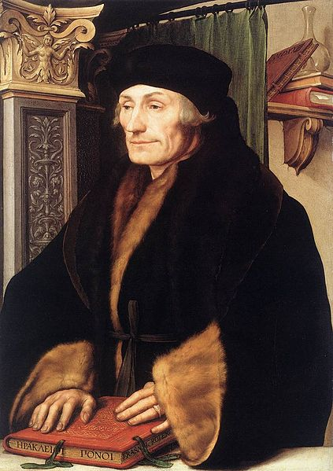

Portrety Erazma z Rotterdamu
Pięćset lat po napisaniu słynnej „Pochwały głupoty”, jednej z najbardziej doniosłych ksiąg w dziejach ludzkości, Museum Boijmans Van Beuningen prezentuje znaczącą wystawę poświęconą jej autorowi, Erazmowi z Rotterdamu.
Zgromadzone na wystawie dzieła sztuki, przywiezione z Nowego Jorku, Paryża, Londynu czy Madrytu, nigdy dotąd nie prezentowane w Holandii (nawet Luwr w drodze wyjątku wypożyczył z tej okazji znakomity portret pędzla Hansa Holbeina młodszego), ilustrują idee Erazma oraz jego wpływ na europejską myśl i społeczeństwo.
Desiderius Erasmus Roterodamus (1466-1536) już za życia stał się luminarzem swej epoki. Na wystawie zaprezentowano portrety wielkiego humanisty stworzone przez największych ówczesnych artystów: Quentina Massysa, Hansa Holbeina młodszego oraz Albrechta Dürera. Ekspozycja ogniskuje również uwagę na zagadnieniach bliskich sercu uczonego i myśliciela, jak wychowanie i edukacja, pokój i wojna, religijność i sztuka.